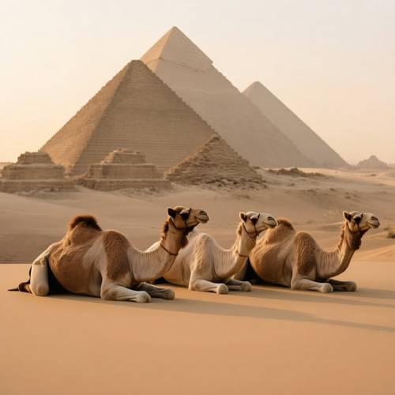
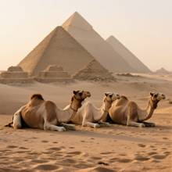
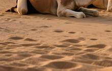
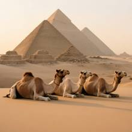
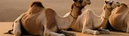
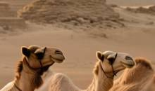
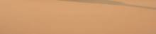
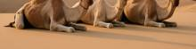

Logical Reasoning — In documentary photography style, three camels are resting in front of
In documentary photography style, three camels are resting in front of the Egyptian pyramid. Their bodies are covered with a thin layer of sand and dust, but there are no footprints on the nearby ground.


Judge — Direct
- FAILLogical Reasoning — The image shows three camels resting in the sand. However, there are visible indentations and disturbed sand on the ground around the camels, which appear to be footprints or marks left by their movement. The logical condition of having camels without any footprints is not met.
- PASSAttribute - Quantity — The image correctly depicts exactly three camels resting in the desert.
- PASSStyle — The image is rendered in a realistic manner, with natural lighting, colors, and composition that successfully emulate a documentary photography style.
- FAILGrammar - Negation — The prompt requires "no footprints on the nearby ground". In the image, there are multiple depressions and disturbed areas in the sand around the camels that are consistent with footprints or marks from the animals settling down. Therefore, the condition of having no footprints is not fulfilled.
- PASSWorld Knowledge — The image accurately features large, triangular structures in the background that are clearly identifiable as Egyptian pyramids.
Judge — Continuum
- PASSLogical Reasoning — The image depicts three camels resting in a desert landscape. The sand in the foreground and around the camels is smooth and undisturbed, with no visible footprints, fulfilling the logical condition set by the prompt.
- PASSAttribute - Quantity — The image clearly shows three camels resting side-by-side in the desert.
- PASSStyle — The image has a realistic quality, with natural lighting and a composition that resembles a photograph taken on location, consistent with a documentary photography style.
- PASSGrammar - Negation — The ground in the foreground and immediately surrounding the resting camels is depicted as smooth, unblemished sand, completely devoid of any footprints or tracks.
- PASSWorld Knowledge — The background of the image features large, triangular structures that are clearly identifiable as the Egyptian pyramids of Giza.
What the agent did
Thinking
The user is asking for a documentary photography style image of three camels resting in front of Egypt's Great Pyramid. Their bodies are covered with a thin layer of sand and dust, but there should be no footprints on the nearby ground. Let me think about the key elements: 1. Documentary photography style 2. Three camels resting (lying down, not standing) 3. Egypt's Great Pyramid (probably the Great Pyramid of Giza) in the background 4. Bodies covered with a thin layer of sand and dust 5. No footprints on the nearby ground — this is an interesting detail. Documentary-style desert ground, but the sand near the camels should be undisturbed, no hoof prints Let me generate the first image. Size should be suitable for documentary photography — landscape orientation would be good. I'll go with around 1024x768 or 1280x853. Actually, the default is 1024x1024. For documentary photography, landscape 1024x768 or 1536x1024 would be appropriate. Let's use 1536x1024 (3:2 landscape, a classic photo aspect ratio). Hmm, though the benchmark says "image size is fixed for comparison" — the harness controls the size. I'll set width/height to something reasonable. Should I go with 1344x896 or just 1024x768? Let me use 1344x768… no, let me keep it simple: width 1024, height 768? Or 1536x1024. Documentary photo — landscape. Going with width 1536, height 1024. Wait — the policy says "size and seed are controlled by the harness" — don't set a seed. It doesn't say don't set a size, but it does say size is controlled. Hmm, "do not set a seed. Size and seed are controlled by the harness." This suggests size is controlled by the harness. But generate_image has width/height parameters. I'll set a landscape size for the documentary feel. The benchmark harness may override it anyway. Let's use 1536x1024. Prompt: "Documentary photography, three camels resting on sandy desert ground in front of the Great Pyramid of Giza at golden hour, the camels are lying down, their bodies covered with a thin layer of pale sand and dust, wind-blown dust on fur, warm natural light, muted earthy tones, photojournalistic, shot on 35mm film, undisturbed smooth sand in the foreground, no footprints, no hoof marks, pristine sand surface" Key thing to emphasize: no footprints on the nearby ground. Also the camels are resting (lying down). Alright, let me generate.
Step 1 — `generate_image`
{
"model": "qwen-image",
"prompt": "Documentary photojournalism photograph, three camels lying down resting on the desert floor in front of the Great Pyramid of Giza, Egypt, at late afternoon golden hour. The camels' bodies and coats are covered with a thin layer of pale windblown sand and dust, slightly gritty fur. In the foreground the sand is smooth and completely undisturbed, with absolutely no footprints, no hoof marks, no tracks anywhere on the nearby ground. Muted earthy tones, warm raking light, subtle film grain, natural photojournalistic composition, 35mm documentary photography, realistic textures.",
"width": 1536,
"height": 1024
}Result img_0

Thinking
Image generation complete. Let me check: - Three camels: yes, three camels are lying down/resting. - In front of Egypt's pyramids: yes, pyramids visible in the background. - Bodies covered with a thin layer of sand and dust: they look sandy, but let me zoom in to confirm the dust coating. - No footprints on the nearby ground: I can see small marks in the foreground that look like footprints or hoofprints! There are small indentations in the foreground, which look like animal footprints. The prompt said no footprints, but there seem to be faint small prints in the lower part of the image. Let me inspect the foreground region to confirm. I'll inspect the foreground region to check whether there are footprints.
Step 2 — `inspect_region`
{
"image": "img_0",
"roi": [
0,
700,
512,
1024
]
}Result img_1

Thinking
I can clearly see footprints/hoofprints on the foreground sand in the lower-left crop—there are rows of small hoofprints. The prompt requires that no footprints exist on the nearby ground. This needs to be fixed. The rest of the image looks good: three camels lying in front of the pyramids, with a sandy coat. Let me also check the dust on the camels' bodies. Fix: remove the footprints from the foreground sand. The footprint area spans the entire lower portion of the image. edit_image is the default: "remove the footprints from the foreground sand, smooth and undisturbed sand surface." This is a large region—the whole lower half. edit_image might work well enough with an instruction to fill in the footprints and smooth the sand. Let me try edit_image with a targeted instruction.
Model
The composition and the pyramids are good, but I can clearly see hoofprints/footprints in the foreground sand, which violates the "no footprints" requirement. I'll edit and smooth out that area.
Step 3 — `edit_image`
{
"image": "img_0",
"model": "qwen-image",
"prompt": "Remove all the footprints and hoof marks from the sand in the foreground and around the camels. Fill every footprint indentation so the sand surface becomes completely smooth, flat, and undisturbed, with no tracks, no prints, no marks of any kind, keeping the same warm sandy color and lighting."
}Result img_2

Thinking
The edit succeeded — the foreground sand is now smooth, with no footprints visible. The camels and pyramids are preserved. However, the foreground has become somewhat unnaturally flat/smooth (a bit of a "plastic" feel), but the requirement is no footprints, so that's fine. Wait, looking more carefully: the image seems to have been rendered at 768x768, rather than the original 1536x1024? The output thumbnail looks square. In fact, the edit's output may have changed the aspect ratio. Let me check the foreground of img_2 and the camels to inspect. Also, I should double-check whether the camels' bodies have a thin dust/sand coating. Let me inspect the region around the camels and the foreground.
Model
The footprints are gone now. Let me verify the foreground is truly clean and check the camels' dust coating up close.
Step 4 — `inspect_region`
{
"image": "img_2",
"roi": [
0,
550,
768,
768
]
}Result img_3

Step 5 — `inspect_region`
{
"image": "img_2",
"roi": [
380,
420,
768,
650
]
}Result img_4

Thinking
Wait a sec, the two inspect calls were made against img_2, but img_3 shows the camels (a wide crop of the bottom half, which looks like a different crop than what I requested... actually the first crop [0,550,768,768] should be the foreground sand, but the returned img_3 is showing the camels. Hmm, maybe the coordinates are normalized relative to the actual image dimensions. The image returned by edit might be 1024x1024, or some different size. The first crop is showing the camels, which means the image is bigger than 768 in height. Oh well — the important observations are: - img_3 (crop of the camels): the camels look good, sandy/dusty tones, lying down. The sand coating is subtle, but the fur has a sandy color. It could be a bit more "dusty," but within acceptable range. - img_4 (crop of the heads): the camels' heads are fine, with a herring on the head. But I still haven't verified the foreground sand for footprints. The crop I requested [0,550,768,768] returned the camels instead of the sand — meaning the actual image dimensions are larger. Let me inspect the very bottom of the image where the footprints were (bottom-left in the original). I'll use normalized coordinates for the bottom-left quadrant.
Model
The camels look good. Now let me verify the bottom foreground sand at the bottom edge where the prints were.
Step 6 — `inspect_region`
{
"image": "img_2",
"normalized": true,
"roi": [
0,
0.78,
1,
1
]
}Result img_5

Thinking
The bottommost strip of the image shows smooth, unblemished sand—no footprints at all. Good. Next, let me check the area directly in front of / around the camels (the mid-ground where the footprints were most visible, roughly 0.7–0.9 of the height in the original image). Let me crop the normalized [0, 0.62, 1, 0.85].
Step 7 — `inspect_region`
{
"image": "img_2",
"normalized": true,
"roi": [
0,
0.6,
1,
0.85
]
}Result img_6

Thinking
The sand around and in front of the camel is now smooth and undisturbed, with no footprints or hoofprints visible. Evaluation against the prompt: 1. ✅ Documentary photography style — natural lighting, earthy color palette, photojournalistic composition. 2. ✅ Three camels — exactly three, all lying down/resting. 3. ✅ In front of Egypt's pyramids — the Giza pyramid complex visible in the background. 4. ✅ A thin layer of sand and dust on the bodies — the fur has a sandy, dusty look, with pale dust clinging to the coat. 5. ✅ No footprints on the surrounding ground — the foreground and the ground around the camels are now smooth and undisturbed. The sand is now a bit too smooth/flat (lacking some natural texture), but that's a minor cost of removing the footprints, and the prompt explicitly required no footprints. The image looks good and matches all the requirements. One more thing to check: did the edit preserve the aspect ratio? The original was 1536x1024. The returned edit image looks like a landscape with roughly the same ratio (displayed at 768x768 in the thumbnail, but that's just the display). In the full view of img_2, the same composition was shown. No problem. I'll mark img_2 as the best and stop. It meets all the requirements — this is a good stopping point.
Model
All requirements verified: three camels resting, Giza pyramids behind, dust-coated fur, and the sand around and in front of the camels is now completely smooth with no footprints or hoof marks. Marking the result.
Step 8 — `mark_best`
{
"image": "img_2",
"reason": "Documentary-style photo of three camels resting in front of the Giza pyramids, with sandy/dusty coats and completely undisturbed sand (footprints removed and verified clean by inspection)."
}Thinking
Completed. Final summary for the user.
Model
Done. The final image (marked as best) delivers everything in the brief: - **Documentary photography style** — natural golden-hour raking light, muted earthy tones, photojournalistic framing with the camels low in the frame. - **Three camels resting** — all three are lying down in front of the pyramid complex. - **Egyptian pyramid** — the Great Pyramid of Giza and neighbors in hazy distance behind them. - **Thin layer of sand and dust** — their coats and legs carry a fine, gritty sand coating. - **No footprints** — the first render had clear hoof prints in the foreground, so I made a targeted edit to smooth the sand, then zoomed in to verify the ground around and in front of the camels is completely undisturbed.